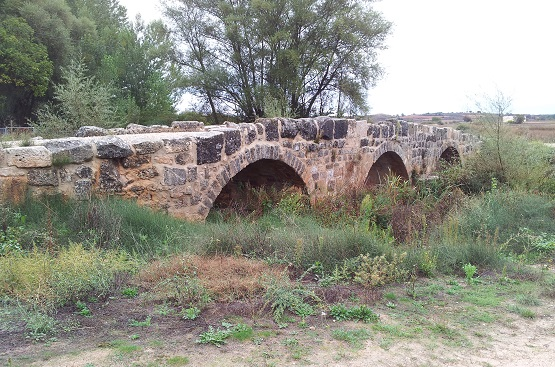
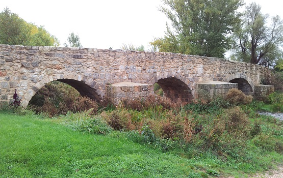

|
Coruña del Conde Ciudad Celtibera, poblada por los Arévacos. De época romana es el puente que permitía el acceso a Clunia a través del río Arandilla. Datado en el siglo I y reformado posteriormente.
 El otro puente, en la mitad de la población, también se cree que es de origen romano. Puentes construidos con tres arcos de medio punto, fabricados con sillarejo, con contrafuertes y tajamares. Son los únicos puentes que quedan de la tupida red de caminos que circundaban la ciudad romana de Clunia.

|